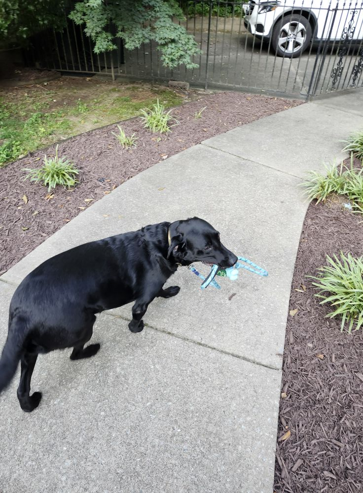
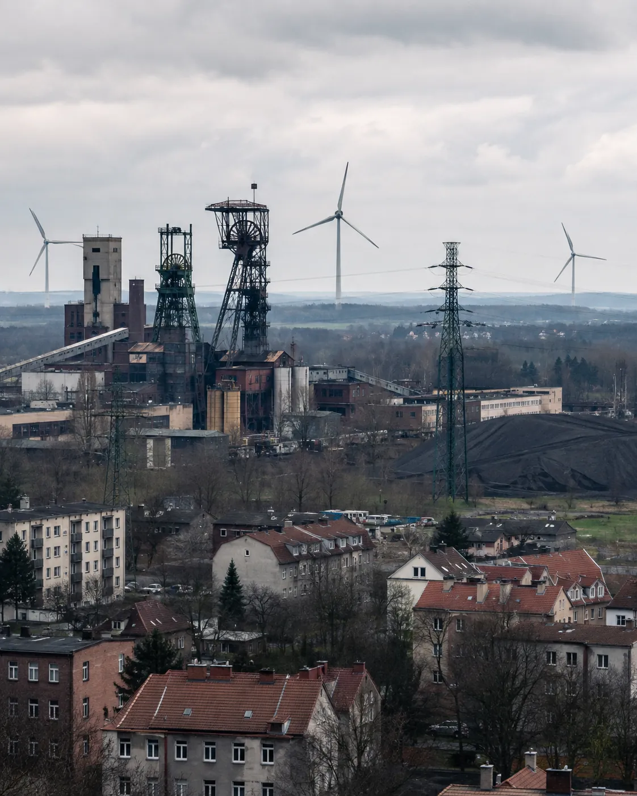
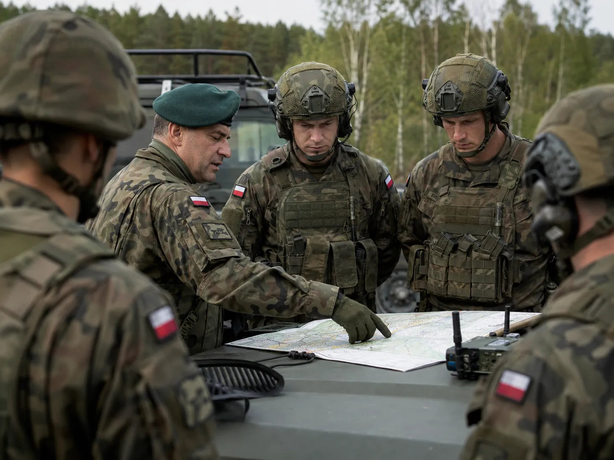
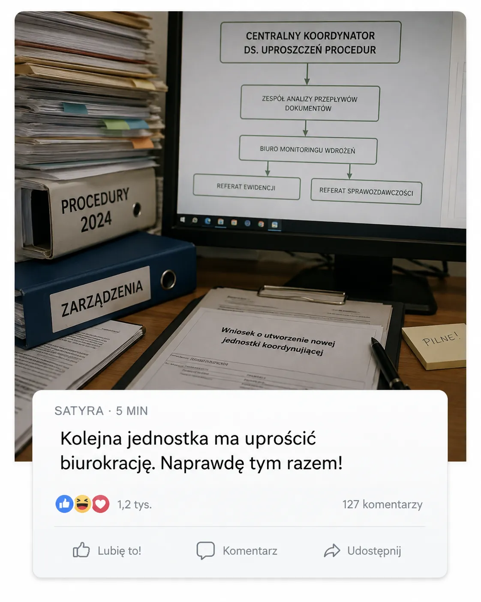
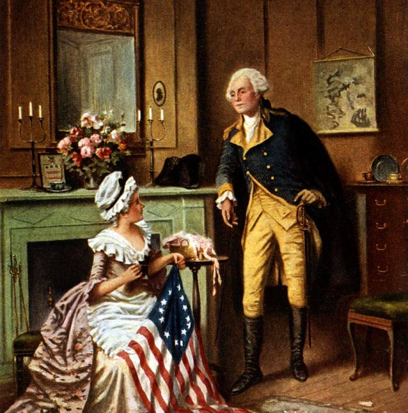
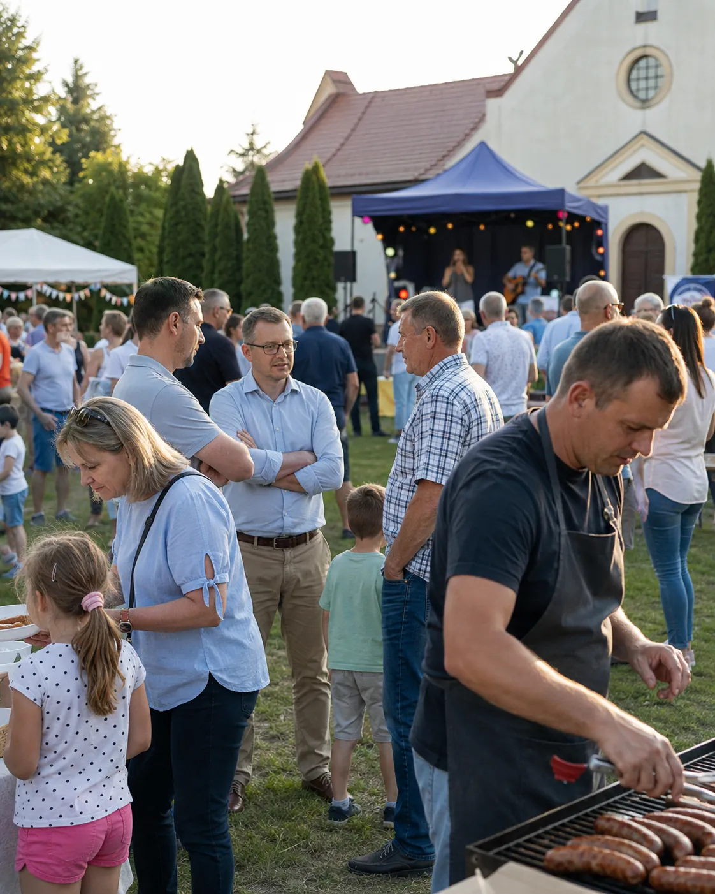

3/8Rozpoznaj profilćwiczenie z edukacji medialnej i fact-checkingu
Profil 3 z 8
Zadanie indywidualne
Przejrzyj profil i zdecyduj, z jakim typem konta masz do czynienia.
Przejrzyj całą historię konta. Zwróć uwagę na tematykę wpisów, źródła, relacje z innymi użytkownikami, sposób wywoływania emocji oraz możliwy cel działania. Nie oceniaj profilu wyłącznie na podstawie zgodności lub niezgodności z poglądami autora.

Paweł Krupa
812 znajomych
EKTBMKGSAN
PostyInformacjeZnajomiZdjęciaWięcej
Posty
Paweł Krupa15 lipca o 20:41 · Tychy · ●
Miał być „szybki spacer przed burzą”. Borys znalazł patyk, kałużę i trzy osoby, które koniecznie musiał przywitać. Wróciliśmy po godzinie, oczywiście cali mokrzy 😅
👍❤️ 6712 komentarzy
👍 Lubię to!💬 Komentarz↗ Udostępnij
EK
Ewa KrupaA mówiłeś, że tylko pod blok 😂 Ręczniki już się suszą.
TB
Tomek BłaszczykOn cię po prostu trenuje przed emeryturą.
PK
Paweł KrupaNa razie wychodzi mu lepiej niż trenerowi na siłowni.
Paweł Krupa12 lipca o 07:18 · ●
W telewizji wszyscy są za „sprawiedliwą transformacją”. Tylko kiedy przychodzi do konkretów, o terminach dowiadują się najpierw ministerstwa, potem zarządy, a ludzie na końcu. Nie jestem przeciw zmianom. Jestem przeciw robieniu ich z tabelki w Warszawie, bez rozmowy z regionem.

ŚLĄSKI PUNKT WIDZENIA
Nowy harmonogram wygaszania kopalń. Samorządy chcą ponownych konsultacji
Przedstawiciele gmin wskazują, że bez inwestycji zastępczych część powiatów może stracić tysiące miejsc pracy.
👍😡 10438 komentarzy · 14 udostępnień
👍 Lubię to!💬 Komentarz↗ Udostępnij
GS
Grzegorz SowaTylko że bez dat znowu wszystko będzie odkładane.
PK
Paweł KrupaDaty muszą być. Ale razem z planem, co będzie zamiast zakładu. Sam kalendarz zamknięć to nie plan.
AN
Aneta NowakDokładnie. U nas już były trzy „ostateczne” harmonogramy.
Paweł Krupa6 lipca o 22:09 · ●
Można krytykować błędy Zachodu, decyzje USA i sposób prowadzenia wojny informacyjnej. Sam często krytykuję. Ale opowieść, że Polska byłaby bezpieczniejsza poza NATO, jest dla mnie kompletnie oderwana od geografii. Neutralność bez siły nie jest strategią, tylko życzeniem.

OBSERWATOR BEZPIECZEŃSTWA
Dlaczego państwa Europy Środkowej wybrały NATO?
Analiza motywacji krajów regionu po 1989 roku i najczęstszych uproszczeń obecnych w debacie.
👍❤️😡 8944 komentarze · 9 udostępnień
👍 Lubię to!💬 Komentarz↗ Udostępnij
RB
Robert B.Paweł, ja bym jednak tak Amerykanom nie ufał.
PK
Paweł KrupaJa też im nie „ufam”. Państwa mają interesy, nie przyjaźnie. Dlatego potrzebujemy i własnych zdolności, i sojuszy.
TB
Tomek BłaszczykTo jest akurat najbardziej rozsądne zdanie w tej całej dyskusji.
Paweł Krupa28 czerwca o 18:32 · ●
Mama znalazła pudełko po dziadku. Dokumenty, dwa zdjęcia z wojska i ten zegarek. Nie chodził chyba od lat 90. Nakręciłem delikatnie i ruszył za pierwszym razem. Drobiazg, a człowiek nagle pamięta zapach jego warsztatu i radio grające w tle.
❤️👍 13223 komentarze
👍 Lubię to!💬 Komentarz↗ Udostępnij
MK
Monika KrupaPamiętam ten zegarek! Zawsze odkładał go na parapet, jak coś naprawiał.
PK
Paweł KrupaDokładnie. I potem pół domu go szukało.
Paweł Krupa9 czerwca o 09:06 · ● · Edytowano
PiS i KO potrafią się pokłócić o wszystko, ale kiedy pojawia się pomysł uproszczenia przepisów, kończy się kolejną komisją, zespołem i pełnomocnikiem. Nieważne, kto akurat rządzi — papier zawsze wygrywa.

CODZIENNIK SATYRYCZNY
Rząd upraszcza administrację. Powstanie nowa jednostka koordynująca
Materiał satyryczny.
😄👍 15631 komentarzy · 27 udostępnień
👍 Lubię to!💬 Komentarz↗ Udostępnij
AN
Aneta NowakNie podpowiadaj, bo jeszcze ktoś potraktuje to poważnie.
PK
Paweł KrupaZa późno, formularz powołania zespołu już ma 14 załączników 😉
Paweł Krupa2 maja o 17:44 · Paprocany · ●
Pierwsze 30 km z młodym w tym roku. Na początku pytał, czy daleko. Na końcu pytał, czy możemy jeszcze objechać jezioro drugi raz. Ja już nie pytałem o nic 😄
❤️👍 9316 komentarzy
👍 Lubię to!💬 Komentarz↗ Udostępnij
EK
Ewa Krupa„Młody” ma 24 lata, przypominam 😂
PK
Paweł KrupaDla mnie nadal młody. Zwłaszcza jak nie bierze pompki.
Paweł Krupa3 maja o 10:12 · ●
Najciekawsze w Konstytucji 3 maja nie jest to, że była „pierwsza w Europie”, tylko że jej autorzy próbowali naprawić państwo, kiedy wokół wszystko już się sypało. Rocznice są potrzebne, ale jeszcze lepiej przeczytać choć kilka stron o sporach, które wtedy naprawdę dzieliły ludzi.

HISTORIA PO GODZINACHKonstytucja 3 maja: reforma, kompromis i spóźniona próba ratowania państwa
👍❤️ 749 komentarzy · 5 udostępnień
👍 Lubię to!💬 Komentarz↗ Udostępnij
Paweł Krupa18 kwietnia o 19:57 · ●
„Krzyżu Chrystusa, bądźże pochwalony”. Spokojnego Wielkiego Piątku.
❤️🙏 617 komentarzy
👍 Lubię to!💬 Komentarz↗ Udostępnij
MK
Monika KrupaWzajemnie, Paweł.
GS
Grzegorz SowaSpokojnych świąt dla całej rodziny.
Paweł Krupa11 stycznia · Szczyrk · ●
Pierwszy wyjazd od dwóch lat. Kolana zgłosiły sprzeciw po trzecim zjeździe, ale widok wynagrodził wszystko. Następnym razem biorę kask bez kamerki — człowiek wygląda w nim jak kosmonauta.
👍😄 11821 komentarzy
👍 Lubię to!💬 Komentarz↗ Udostępnij
Paweł Krupa9 czerwca o 19:18 · ●
W sobotę pomagaliśmy z sąsiadami przy festynie parafialnym. Ktoś pilnował grilla, ktoś dzieci, ktoś sceny. Lubię takie dni, bo człowiek przypomina sobie, że większość spraw załatwia się normalną rozmową i wspólną robotą, a nie tylko krzykiem w internecie.

👍❤️ 5816 komentarzy
👍 Lubię to!💬 Komentarz↗ Udostępnij
◷Wyświetlono posty z ostatnich miesięcyStarsze wpisy są dostępne tylko dla znajomych.
Omówienie po odpowiedzi
Profil może być polityczny, emocjonalny i czasem niedokładny — a mimo to być autentyczny
01
Ciągłość historii
Powracają te same osoby, miejsca, hobby i wspomnienia. Profil nie powstał wyłącznie wokół jednego konfliktu.
02
Relacje wzajemne
Komentujący znają szczegóły życia autora, żartują z wcześniejszych sytuacji i otrzymują naturalne odpowiedzi.
03
Zróżnicowany ton
Obok polityki pojawiają się wpisy prywatne, lokalne, religijne, historyczne i humorystyczne.
04
Brak automatyzmu
Autor nie powtarza identycznych haseł, doprecyzowuje stanowisko i odpowiada także osobom, które się z nim nie zgadzają.
Kluczowe rozróżnienie: autentyczność konta nie oznacza, że każda udostępniona informacja jest prawdziwa. Osobno oceniamy kto publikuje, a osobno czy publikowana treść jest wiarygodna.
Ewa KrupaA mówiłeś, że tylko pod blok 😂 Ręczniki już się suszą.
Tomek BłaszczykOn cię po prostu trenuje przed emeryturą.
Paweł KrupaNa razie wychodzi mu lepiej niż trenerowi na siłowni.